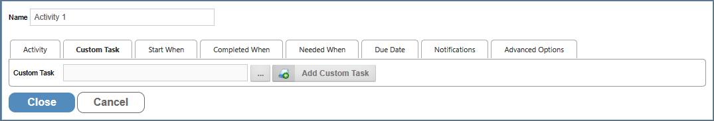

This Activity Type enables you to invoke a Custom Task to run as a Process Timeline Activity. In addition to the common properties tabs that appear for all Timeline activities, the configuration settings below are unique to this Activity Type.

Select the Custom Task you want to use for this activity by clicking the Custom Task Object Picker, then select the custom task you want to use from the dialog box. Then, click the Add Custom Task button to apply the custom task to the activity. You can only run one Custom Task per activity.
You may use the Object Picker to select a Custom Task that will automatically run when the Activity starts.
For details on how to configure Custom Tasks, see the Custom Tasks documentation.
To view the documentation for other Activity Types, you can navigate to them using the Table of Contents displayed in the upper right corner of the page, or by using one of the links below.
User: This Activity Type assigns a task to a user or users, which must be completed to end the task.
Notify: This Activity Type sends email notifications to users who aren't participants in the process.
Process: This Activity Type invokes a different process that will run as a separate, synchronous subprocess.
Script: This Activity Type enables you to invoke a custom script.
Form Actions: This Activity Type enables you to manipulate the Form used for the process.
Branch: This Activity Type enables you to change the operation of the Process Timeline to invoke a specified Activity.
Parent: This Activity Type serves as a container for other activities and to create a looping segment in a Process Timeline.
End Process: This Activity Type enables you to conditionally end a process.
Wait: This Activity Type enables you to pause a Process Timeline.
Case: This Activity Type enables you to manipulate the Case instance that is associated with the Process Timeline.